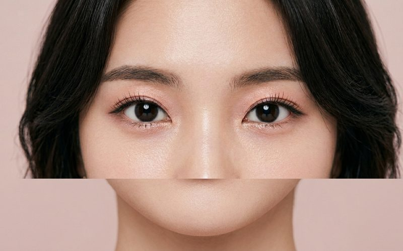
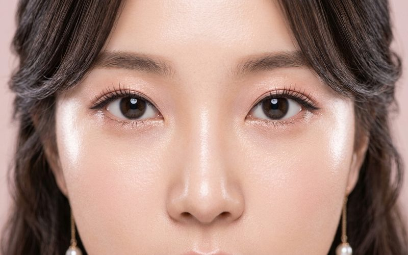
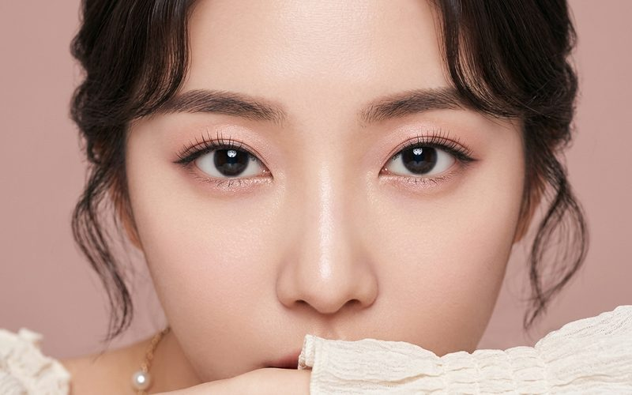

꺼진눈 지방이식
나이가 들면서 눈 위가 움푹 꺼져서 쾡한 인상이 되는 분들이 있습니다. 물론 어릴때부터 그런 경우도 있구요. 이런 경우에 지방이식으로 매우 좋은 결과를 만들 수 있습니다.
— 「꺼진눈 지방이식」 중에서 →꺼진눈 지방이식 케이스 5개 보기 →이런 분들은 이런 종류의 수술을 통해서 상당히 어려보이고 좋은 인상으로 바뀔 수 있다는 점을 알려드리기 위해서 포스팅해보았습니다.
— 「비절개눈매교정과 꺼진눈 지방이식 + 눈밑지방재배치 및 애교볼 팔자 지방이식」 중에서 →— 「비절개눈매교정 + 뒷트임」 중에서 →눈매교정술이라는 수술은 눈을 뜨는 힘이 약한분들에서 눈을 뜨는 근육을 조작하여 눈이 더 잘 떠지도록 해서 눈이 더 커지고 또렷해지게 만들어 주는 수술법입니다.
원래 절개법을 통해 수술했지만, 몇 년전부터는 비절개 눈매교정수술이 개발되어 좋은 효과를 얻고 있습니다.
— 김상호
— 「눈성형 - 비절개눈매교정 & 무절개눈매교정」 중에서 →절개 없이 쌍커풀은 매몰법과 유사한 방식으로 바늘구멍을 통해서 만들어 주고, 눈을 뜨는 근육은 안쪽에서 실로 묶어줍니다
무절개 눈매교정술은 피부에 바늘구멍 조차도 남기지 않고 눈뜨는 근육의 힘만 강화시키는 수술입니다.
원래 쌍커풀이 있는 눈에서 눈만 더 또렷하게 뜨고 싶은 경우.. 또는 쌍커풀이 없는 눈에서 쌍커풀을 만들지 않고 눈만 또렷하게 뜨고 싶은 경우에 적용되는 수술법입니다.
비절개눈매교정은 무절개눈매교정에 비해 바늘구멍을 통해서 쌍커풀을 만들어 주는 것이 추가 된다는 점만이 차이점입니다.
— 김상호
— 「비대칭이 심한 눈에서 비절개눈매교정과 내시경 이마거상술로 비대칭 교정하기」 중에서 →그런 절개식 눈매교정수술은 일단 흉터가 남고, 붓기가 당연히 심해지고, 수술의 오차가 생기는 경우에 교정을 위한 재수술 역시 새로운 절개를 해야하며, 눈매교정이 과하게 된 경우에는 교정이 매우 힘들어지는 한마디로 아주 고난이도의 리스크가 높은 수술이었습니다.
저도 눈매교정수술을 꽤 많이 집도하는 편인데요, 최근 3년 이상은 절개방식의 눈매교정을 한번도 하지 않은것으로 기억합니다. 이제 저한테는 그런 수술이 거의 필요가 없어진 것이지요.
오히려 타병원에서 절개방식으로 눈매교정을 받으신 후 비대칭이 심하게 남거나 눈뜨는 힘이 여전히 부족한 경우에 비절개눈매교정 방식으로 재수술 해서 좋은 결과를 만들어 드렸던 경우도 상 당히 많습니다.
— 김상호
— 「돌출눈 & 꺼진눈에서 쌍커풀 라인이 흐려지거나 여러겹이 되는 이유」 중에서 →돌출눈을 가지신 분들이나, 눈 위쪽이 꺼지신 분들에서 쌍커풀이 흐려졌다거나, 쌍커풀이 여러겹으로 생기는(삼겹풀) 문제가 많이 생깁니다.
일반눈에서와 달리 눈뜨는 방향과 눈꺼풀 피부의 방향이 비슷하다 보니 깊은 한 겹의 쌍커풀 주름이 생기는 것이 아니고 얕은 여러겹의 잔주름이 생기게 됩니다. 아코디언처럼 피부가 쭈글쭈글 해지는 것이지요.
눈 뜨는 힘이 약한 경우는 겹주름 증상이 더 심해지기 때문에 눈매교정 수술을 같이 혹은 단독으로라도 해 주는 것이 좋습니다.
— 김상호
수면마취 상태에서 국소마취를 한 후 수술하기 때문에 무통수술이며
쌍커풀은 자연유착법으로 수술하고 눈안쪽 근육을 실로 묶어서 강화시켜주는 방식의 수술입니다.
쌍커풀라인을 만드는 것은 자연유착법으로 수술하기 때문에 바늘구멍정도의 흉터만 남아서 이 또한 대부분의 경우에 거의 티가 나지 않는답니다.
수술시간은 20분 걸립니다.
회복기간은 대략 5~7일 정도 생각하시면 되는데, 드물게 마취주사를 놓을때 멍이 들어서 2주 전후까지 멍이 드는 경우도 있습니다.
비절개눈매교정의 단점을 굳이 찾자면.. 절개 눈매교정 방식에 비해서 힘이 조금 약할 수 있다는 점이지만 병적으로 심하게 눈이 안떠지는 경우를 제외한 대부분의 눈을 비절개눈매교정 방식으로 충분히 교정할 수 있어 최근 몇 년 사이에 비절개눈매교정 수술이 상당히 인기를 얻고 있습니다.
— 「눈성형 - 비절개눈매교정 & 무절개눈매교정」 중에서 →비대칭인 눈에서 비절개눈매교정을 하는 경우에 한번의 수술로 100% 비대칭을 교정하는 것은 힘듭니다. 제가 수술하는 환자에서 대략 10%, 열 명 중에 한 명은 수술 후에도 비대칭이 남고, 이런 경우에는 보통 3~4주 경에 붓기가 왠만큼 빠진 상태에서 재교정을 해드리고 있습니다. 덜 떠지는 눈쪽을 간단히 무쌍눈매교정 방식으로 살짝 올려드리는 것입니다.
이런 추가교정 또한 절개방식에서는 수술이 상당히 부담이 되었는데 비절개 방식에서는 5분정도 걸리는 간단한 방식이므로 비교도 안되게 적은 부담감으로 수술을 받으실 수 있답니다.
수술 후 1~2일 정도는 제법 부을 수 있답니다
보통 남자들이 여자보다 멍과 붓기가 심한 편인데요.. 눈꺼풀이 부어있는 상태이지만 일상생활을 할 정도는 됩니다
회복기간은 대략 5~7일 정도 생각하시면 되는데, 드물게 마취주사를 놓을때 멍이 들어서 2주 전후까지 멍이 드는 경우도 있습니다.
라인이 진해 보이는 것은 아직 붓기가 있어서 그런 것이며, 붓기가 좀 더 빠지면 자연스럽고 부드러운 라인으로 바뀌게 된답니다.
양쪽눈을 뜨는 근육이 서로 영향을 미치기 때문에 심한 비대칭이 있는 분에서 눈매교정을 하는 경우에 초기에는 비대칭이 보일 수 있지만 대부분 붓기가 빠지면서 비대칭이 교정된답니다.
붓기나 멍은 개인차이가 많고 그때 그때 운도 약간은 작용을 합니다
— 「무절개눈매교정」 중에서 →
남자 비절개 눈매교정
남자 비절개 · 1주
남자 비절개 눈매교정
남자 비절개 · 7일 (조명 없이)
비절개 눈매교정술
절개 후 비절개 재수술 · 2일
무절개눈매교정
무쌍(무절개) 눈매교정 · 3주
비절개눈매교정과 꺼진눈 지방이식 + 눈밑지방재배치 및 애교볼 팔자 지방이식
비절개 + 눈밑지방이동술 · 5주
남자의 비절개 눈매교정술
남자 비절개 · 비대칭
남자의 비절개 눈매교정술
졸린 눈 · 비대칭
비절개눈매교정 + 뒷트임
비절개 + 뒷트임수술 결과는 개인에 따라 차이가 있을 수 있습니다. 사진을 누르면 해당 케이스 글로 이동합니다.
나이가 들면서 눈 위가 움푹 꺼져서 쾡한 인상이 되는 분들이 있습니다. 물론 어릴때부터 그런 경우도 있구요. 이런 경우에 지방이식으로 매우 좋은 결과를 만들 수 있습니다.
— 「꺼진눈 지방이식」 중에서 →꺼진눈 지방이식 케이스 5개 보기 →아래쪽에 있는 그림자는 안와지방을 감싸는 지방주머니의 힘이 약해져서 안쪽의 지방이 불거져 보이는 것으로, 이 그림자가 짙어지면 사람이 피곤해 보이고, 늙어 보이며, 좋지 않은 인상을 주게 됩니다. 눈밑 지방재배치 수술은 이러한 아래쪽에 있는 그림자를 없애주는 수술법입니다.
— 「눈밑 지방 재배치」 중에서 →눈밑지방 재배치 케이스 5개 보기 →나이가 들면서 얼굴에 노화현상이 생기는데 가장 눈에 띄는 노화현상이 눈주위의 변화입니다. 눈썹 바깥쪽 1/3 정도가 아래로 쳐지면서 윗눈꺼풀이 시야를 가리게 되고, 이를 보상하기 위해 이마 근육을 이용해서 눈썹을 끌어올립니다. 그 결과 이마에는 깊은 주름이 패이게 됩니다. 이런 노화현상을 교정하는 수술로 눈 위쪽에는 상안검성형, 눈썹하 거상술, 이마거상술이 있고, 눈 아래쪽에는 하안검 성형이 있습니다.
— 「상안검 성형술」 중에서 →상·하안검성형 케이스 5개 보기 →절개눈매교정 을 한 눈에서는 비절개눈매교정 을 못한다라고 하는 선생님도 계시던데요, 전~혀 그렇지 않습니다. 저는 최근 5년여 동안 절개눈매교정으로 좋은 결과를 보지 못했던 많은 환자분들에서 비절개눈매교정 으로 재수술을 해서 좋은 결과를 얻고 있습니다.
— 「비절개 눈매교정술」 중에서 →절개법에 비해서 비절개법은 유지기간이 짧은 것이 아닌가.. 하는 의심이 저도 있었는데요, 이미 5년여간 경과를 보면서 거의 차이가 없다는 결론을 내렸고, 필요한 환자분들께는 자신있게 수술을 권해드리고 있습니다.
— 「비대칭이 심한 눈에서 비절개눈매교정과 내시경 이마거상술로 비대칭 교정하기」 중에서 →남자의 경우 대부분 속쌍커풀로 수술하기 때문에 수술한 티가 거의 나지 않게 수술이 가능하답니다. 쌍커풀라인을 만드는 것은 자연유착법으로 수술하기 때문에 바늘구멍정도의 흉터만 남아서 이 또한 대부분의 경우에 거의 티가 나지 않는답니다.
— 「남자 비절개 눈매교정」 중에서 →쌍커풀이 있던 눈에서 무절개눈매교정술을 받으면 눈이 더 크게 떠지면서 쌍커풀 크기가 좀 작아질 수 있습니다 이 부분은 반대로 생각하면 쌍 커풀이 너무 커서 수술한 티가 나거나 부담스러운 경우에 간단한 방법으로 쌍커풀 크기를 줄여줄 수 있다는 매우 큰 장점이 됩니다.
— 「눈성형 - 비절개눈매교정 & 무절개눈매교정」 중에서 →눈 뜨는 힘이 약한것도 눈이 꺼지는 원인중의 하나입니다. 눈 위 지방이식과 무쌍눈매교정 두 수술은 눈 위쪽에 볼룸을 증가시키는 수술이며, 동시에 쌍커풀이 약간 낮아지는 수술입니다.
— 「내시경 이마거상술 후에 생기는 꺼진눈을 지방이식과 무쌍눈매교정으로 교정하는 법」 중에서 →
눈매교정술윗트임 / 위트임 수술이 뭔가요?
상담하다 보면 가끔 윗트임 수술을 해달라고 하시는 경우가 있습니다.
 눈매교정술
눈매교정술
돌출눈 & 꺼진눈에서 쌍커풀 라인이 흐려지거나 여러겹이 되는 이유
돌출눈을 가지신 분들, 눈 위쪽이 꺼지신 분들에서 쌍커풀이 흐려졌다거나, 쌍커풀이 여러겹으로 생기는 (삼겹풀) 문제가 많이 생...

눈매교정술짝눈에서 안면비대칭에 대해서
코수술이든 쌍커풀 수술이든 첫 수술을 받으러 오시는 환자분들 중에는 본인의 얼굴이 비대칭이라는 것을 모르시는 경우가 상당히 많...
 눈매교정술
눈매교정술
내시경 이마거상술 후에 생기는 꺼진눈을 지방이식과 무쌍눈매교정으로 교정하는 법
대부분의 경우에는 눈 위가 꺼지면 약간 피곤해보이고 나이들어보일 수 있기 때문에 수술 전에 미리 이런부분을 설명드리고 눈위 지...
 눈매교정술
눈매교정술
비대칭이 심한 눈에서 비절개눈매교정과 내시경 이마거상술로 비대칭 교정하기
환자분의 경우는 눈썹을 많이 사용하시고, 눈썹을 올리는 이마근육의 힘을 빼고 정면을 보는 경우에는 눈썹이 떨어지면서 눈을 더...
 눈매교정술
눈매교정술
비대칭이 심한 눈에서 비절개눈매교정
절개식 눈매교정수술은 일단 흉터가 남고, 붓기가 당연히 심해지고, 수술의 오차가 생기는 경우에 교정을 위한 재수술 역시 새로운...
 눈매교정술
눈매교정술
비대칭이 심한 눈에서 비절개눈매교정과 내시경 이마거상술로 비대칭 교정하기
안녕하세요
 눈매교정술
눈매교정술
남자 비절개 눈매교정
쌍커풀은 자연유착법으로 수술하고 눈안쪽 근육을 실로 묶어서 강화시켜주는 방식의 수술입니다.
 눈매교정술
눈매교정술
남자 비절개 눈매교정
안녕하세요
 눈매교정술
눈매교정술
비절개눈매교정과 꺼진눈 지방이식 + 눈밑지방재배치 및 애교볼 팔자 지방이식
안녕하세요.
 눈매교정술
눈매교정술
비절개 눈매교정술
삼겹쌍커풀 이 생기는 원인은 1) 사진에서처럼 눈 뜨는 힘이 약한 경우, 2) 눈 위쪽이 너무 꺼진 경우, 3) 안구 돌출이...
 눈매교정술
눈매교정술
비절개 눈매교정술 2017. 2. 10
안녕하세요.
 눈매교정술
눈매교정술
비절개눈매교정과 꺼진눈 지방이식 + 눈밑지방재배치 및 애교볼 팔자 지방이식
눈 위쪽은 비절개 눈매교정수술과 눈위 꺼진 부위에 지방이식을 하고 눈 아래쪽은 눈밑 지방재배치 수술과 애교볼 팔자 지방이식을...
 눈매교정술
눈매교정술
무절개눈매교정
쌍꺼풀을 따로 만들지 않고 눈만 또렷하게 뜰 수 있도록 하는 무절개눈매교정 혹은 무쌍눈매교정이라는 수술을 소개해 드립니다
눈매교정술 2016.03.15
무절개눈매교정 - 2016.03.15
 눈매교정술
눈매교정술
눈성형 - 비절개눈매교정 & 무절개눈매교정
비절개 눈매교정과 무절개 눈매교정에 대해 간략히 설명드리겠습니다.
 눈매교정술
눈매교정술
눈성형 - 비절개눈매교정 & 무절개눈매교정
비절개 눈매교정과 무절개 눈매교정에 대해 간략히 설명드리겠습니다.
눈매교정술 2016.01.02
안녕하세요. 로코코성형외과 김상호원장입니다.
 눈매교정술
눈매교정술
남자의 비절개 눈매교정술
심하지 않은 안검하수(눈 뜨는 힘이 약한 경우)에서 흉터를 남기면서 절개법을 하기도 애매하고, 일반 매몰법을 하기에는 모양도...
눈매교정술 2013.12.4
눈매 교정술이란
 눈매교정술
눈매교정술
비절개눈매교정 + 뒷트임
눈매교정술이라는 수술은 눈을 뜨는 힘이 약한분들에서 눈을 뜨는 근육을 조작하여 눈이 더 잘 떠지도록 해서 눈이 더 커지고 또렷...
눈매교정술
눈매교정술 2013.8.7
2013.8.7
 눈매교정술
눈매교정술
남자의 눈성형 - 무쌍 눈매교정 + 앞트임
쳐진살 때문에 눈이 가려지고, 눈앞쪽의 몽고주름이 심해서 눈이 작고 매서워보이는 인상입니다. 거기에 눈뜨는 근육의 힘이 약간...
눈매교정술
눈매교정술 2011.04.30
안녕하세요.
 눈매교정술
눈매교정술
중증 안검하수
수술 전 사진의 눈뜬 상태가 가장 눈을 크게 뜬 것이랍니다. 뮬러근과 안검거근 근막을 이용해서 교정하였습니다.

눈매교정술눈매교정술 2011.04.27
2011.04.27
눈매교정술 2011.04.20
2011.04.20 중증 안검하수